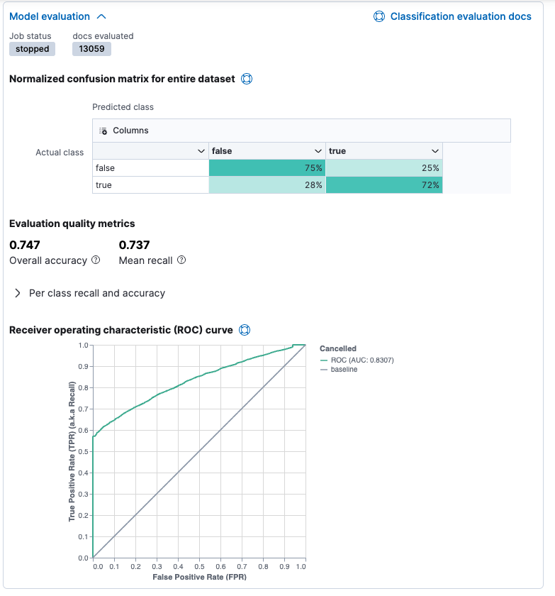

Data frame analytics
editThe Elastic machine learning data frame analytics feature enables you to analyze your data using classification, outlier detection, and regression algorithms and generate new indices that contain the results alongside your source data.
If you have a license that includes the machine learning features, you can create data frame analytics jobs and view their results on the Data Frame Analytics page in Kibana. For example:

For more information about the data frame analytics feature, see Machine learning data frame analytics.